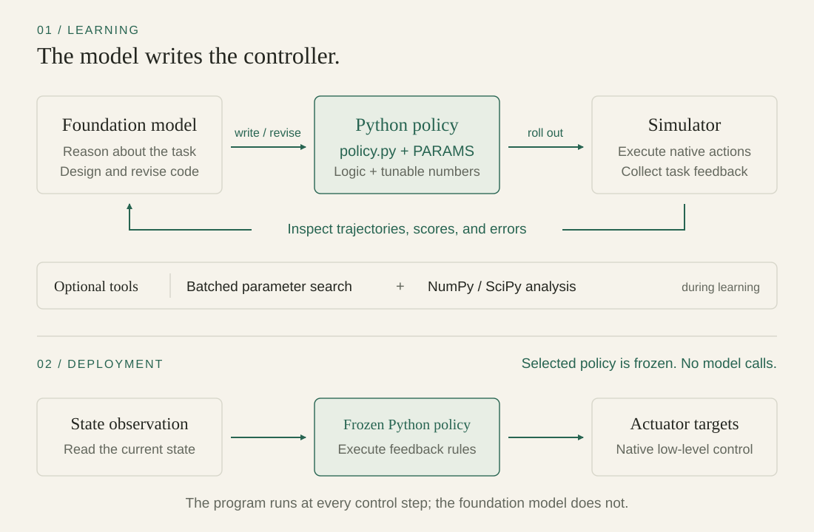

Can a model learn
to be a control engineer?
A dexterous skill is more than a successful trajectory. The hand must respond as the object moves, contact changes, and the starting state varies.
Our goal is to turn that behavior into a reusable program: a primitive that maps observations directly to low-level actions. In DexVerse, this means producing 28 joint-position targets per hand. In Adroit Pen, it means coordinating contact while reorienting an object inside the hand.
Code makes the controller inspectable. We can read its conditions, adjust its parameters, and test the same program from a new start. A recorded trajectory tells us what happened once; a feedback policy specifies how to respond to the current state.
Acquiring those policies manually takes control-engineering work. Learning them through repeated physical interaction also makes resets and trials costly. Here, we investigate controller acquisition in simulation with a small set of training starts or stages, while recording the simulator interaction spent on adaptation.
Choose a useful space of functions.
Then design the search within that space.
This is the central idea behind Code as Primitives. The model proposes the structure of a controller; numerical search explores its parameters. The model’s weights stay fixed. What changes is the program, its constants, and the evidence available to the agent.
What “few-shot” means here
It describes the training-start or curriculum setup, not a claim of only a few simulator episodes. Parameter searches can consume hundreds or thousands of rollouts. We report those costs separately below.
Design the policy.
Then search its parameters.
Separate the choice of controller family from the choice of numerical values, while allowing new evidence to change either.
What should the controller do?
The model writes the features, feedback rules, and branches in policy.py. It can inspect failed rollouts and change the program when its assumptions about the task are wrong.
Which settings make it work?
A literal PARAMS vector exposes gains, thresholds, targets, or other authored constants. Candidate batches test numerical choices while holding the controller structure fixed.

Design → optional parameter search → training feedback → frozen training validation → held-out assessment. Failed training submissions can inform revision; held-out outcomes cannot.
Step inside the framework.
The model chooses candidate batches and numerical analysis; the simulator executes each counted trial.
Training evidence can change the policy. Held-out outcomes never return to learning.
Choose a controller family.
- Can change
- Stays fixed
Search is optional in both treatments: authored code can be submitted directly for training validation.
Rewriting the whole policy after every rollout leaves many possible explanations for success or failure. A changed threshold and a completely different strategy are both possible edits. Testing a batch within one controller family gives the agent a more comparable set of outcomes.
The harness supports two ways to search. A0 provides a built-in cross-entropy optimizer. L3+papers lets the model propose candidate batches, inspect their rollouts, and run its own numerical analysis with NumPy and SciPy. It also supplies reference texts for the task category. Computation tools do not themselves access the simulator; candidate evaluations are counted separately.
A promising search result still has to pass a frozen-policy evaluation. Once submitted, the code cannot be edited during that evaluation, and the model cannot intervene in individual control steps.
Read the policy and evaluation contract
The core interface is select_action(observation). The program returns native actuator commands or joint-position targets, depending on the environment. In the evaluated policy-only modes, it executes without a model-provider request at each action.
Training acceptance and held-out testing are separate. Training evaluations can feed adaptation. Held-out starts are reserved for frozen evaluation, and their outcomes are not returned to the learning agent.
Learning to control
a pen in the hand.
Contact-rich control makes both the structure of the policy and its numerical settings matter.
The controller sees the hand and pen state and must reorient the pen toward a target. An action that changes its orientation can also loosen the grasp or eject it. A useful policy needs to turn what it observes into a coordinated change across the fingers and wrist.
The following walkthrough follows the saved GPT-6 Astra random-reset Pen run. It shows recorded probes, policy revisions, and candidate evaluations; the final held-out result comes after all ten curriculum stages.
What makes the pen move?
The saved experiment notes describe a neutral action that holds the pen roughly horizontal. Changing the thumb alone tilts it and then ejects it. A combined wrist-and-thumb setting holds the pen along a raised axis.
These probes give the model evidence about coordinated motion. The design problem becomes how to move between useful grasps while keeping contact.
Recorded stage-one probes. Video: saved neutral-probe rollout, not an artist’s reconstruction.
From a single grasp to a grasp library.
The recorded policy develops orientation-dependent transitions between grasp configurations. A later version chooses a library entry by its alignment with the desired pen direction, then blends controls according to the observed pen axis.
# Select a library entry using the target orientation.
t = v[36:39]
best = max(LIB, key=lambda r:
sum(r[0][i] * t[i] for i in range(3)))
# Derive transitions from the observed pen axis.
phase = max(0.0, min(1.0, (0.75 - v[33]) * 6))
third = max(0.0, min(1.0, (0.5 - v[33]) * 5))Excerpt from the saved stage-one policy in search_0039; omitted code defines the grasp library and actuator outputs. The comments explain the source excerpt. It is not the final stage-ten controller.
Test the family. Find what it misses.
The run evaluates 128-candidate batches while expanding grasp configurations. A later 16-rollout library check records ten successes. The next frozen submission still fails, showing why search success alone does not establish acceptance.
The next revision expands the library with reverse-tilt and position-compensation behavior. Its recorded 32-rollout check finds 21 successes, and the second frozen submission passes stage one.
The 16- and 32-rollout checks each repeat one parameter vector on fresh starts. These are adaptive search-batch outcomes, not held-out success rates or a controlled before/after comparison. Further policy refinement occurs in stages two through ten.
Freeze the code.
Change the start.
After the ten-stage curriculum, the final Pen policy succeeds on all 30 reserved held-out seeds. There are no model calls, parameter updates, or code edits during this test.
The video shows the first planned held-out episode. Its saved actions were replayed and every recorded state matched exactly.
30/30 is the final frozen evaluation, not the result of the stage-one library alone. One training chain; 30 test starts.
The case study summarizes saved experiment notes and controller artifacts. Trace and replay provenance ↗
Does the program work
from a new start?
Training success is a checkpoint. Generalization requires a separate test of the frozen controller.
Adroit: four skills, unseen resets.
In the random-reset L3+papers campaign, GPT-6 Astra completed all ten training stages on Door, Hammer, Pen, and Relocate. The final controllers succeeded on 119 of 120 held-out episodes: 29/30 for Door and 30/30 for each other task.
The held-out test used 30 disjoint seeds per task, with no provider calls and no policy edits. One Door episode reached the time limit. These results measure generalization over the native reset distributions tested here.
DexVerse: a broader set of skills.
The published Claude Opus 5.5 runs cover 75 valid state-observation tasks. Each task gives the model ten training starts. An accepted policy must pass all ten, then runs on 50 unseen starts twice without model involvement.
A0 and L3+papers each accepted 73 of 75 tasks. Their mean held-out success rates were 94.5% and 94.3%, respectively, counting unaccepted tasks as zero. The experiments use simulator state, including object information; these are not vision-only policies.
Task coverage and what the percentages measure
DexVerse registers 100 tasks. Of these, 94 build with the released assets; 17 lack the object pose needed by these state-based policies, and two fail the reset-validity gate, leaving 75 valid tasks.
The two held-out repeats reuse the same 50 unseen starts. They are not 100 unique starts or two independent training runs. GPU physics is not exactly repeatable, so a replay can differ from the original evaluation. The published result is the mean across both repeats, with unaccepted tasks scored as zero.
| Category | Tasks | A0 | L3+papers |
|---|---|---|---|
| Primitive | 8 | 96.1% | 95.0% |
| Functional | 10 | 98.7% | 99.3% |
| Articulation | 14 | 87.6% | 87.6% |
| Bimanual | 4 | 97.8% | 98.0% |
| Multi-goal | 35 | 98.9% | 98.9% |
| Long-horizon | 4 | 63.2% | 60.8% |
How much search does a controller need?
In four of the six DexVerse categories, both A0 and L3+papers use fewer than 150 search rollouts per task on average. Articulation and long-horizon tasks exceed that threshold. The pattern suggests that an authored controller family can sometimes make numerical search compact, while other tasks still require substantial exploration.
Randomize the starts.
Raise the acceptance bar.
A controller can fit the starts it has already seen. The random-reset curriculum draws fresh starts during learning, search, and validation. At stage k, one frozen submission must succeed on all k fresh validation episodes. Failed submissions can feed further adaptation while the stage budget remains.
In the recorded Astra campaigns, the final random-reset controllers score higher on held-out starts than the fixed-start sequential controllers in all four Adroit tasks. This is a descriptive comparison: the campaigns also differ in prompts, seed sets, and the interaction effort actually used.
Watch the frozen programs act.
Left to right: A0, L3+papers, and L3PG. Each video replays one held-out start and includes each panel’s actual success or time-limit outcome. These examples illustrate behavior; the aggregate evaluations above measure performance.
Where control is
still difficult.
Pen manipulation and long-horizon tasks expose the cost of coordinating contact, recovery, and multiple stages of behavior.
A benchmark pass can hide a brittle skill.
An earlier fixed-start Pen prototype switched between two control vectors using the pen’s observed axis. On its recorded training start, it accumulated 35 successful frames—enough to pass the aggregate benchmark criterion—then dropped the pen at step 69.
The newer random-reset policy behaves differently in the shown held-out replay: its last 121 frames are continuously successful, and it finishes with the pen retained and aligned. All 30 final held-out episodes end on successful frames.
Earlier fixed-start prototype
Final random-reset policy
The earlier prototype passed 2/9 additional seeds; the final random-reset policy passed 30/30 reserved seeds. These are different campaigns, protocols, and sample sizes—not a controlled ablation. The videos illustrate behavior beyond the binary score.
Pen remains expensive to learn. The random-reset run used 6,095 search rollouts and 1,233,120 adaptation environment steps, compared with 875 search rollouts for Hammer. It was not the most expensive Adroit task: Door required 8,858 search rollouts.
Long horizons compound the control problem.
DexVerse’s long-horizon tasks combine manipulation and articulation. CookFoods asks the hand to position a pot, place ingredients, pour from two vessels, and operate a stove. OvenBakeSalmon uses two hands to season the salmon, open the oven, load the tray, close the door, and turn a knob.
Completion can depend on earlier conditions still holding: the pot and ingredients must remain correctly placed, or the salmon must remain inside the oven. A controller must coordinate the full task, not just produce an isolated successful motion.
Each panel reports its own held-out replay outcome. The A0 oven replay succeeds on this seed even though that policy did not pass all ten training starts; a successful clip does not by itself establish task acceptance.
| Task / arm | Search rollouts | Learning resets | Held-out repeats |
|---|---|---|---|
| CookFoods / A0 | 906 | 98 | 37/50 · 47/50 |
| OvenBakeSalmon / L3+papers | 633 | 68 | 32/50 · 38/50 |
Across the four long-horizon tasks, mean search use is 564 rollouts for A0 and 1,384 for L3+papers—the largest category means in both arms. Mean held-out success is 63.2% and 60.8%, respectively. These tasks remain a demanding test of agent-written low-level control.
Search rollouts and learning resets are separate counters; neither table nor figure reports total simulator interaction. Task definitions and exact records ↗
What these experiments establish
These are simulation results with state observations and one training chain per condition. They do not establish real-robot transfer, robustness to arbitrary disturbances, or superiority over human demonstrations under matched budgets. The evidence supports executable controller acquisition and generalization within the evaluated settings.
The policy is an artifact
you can inspect.
The practical output is more than a score: it is code, numerical parameters, and a record of the trials that produced them. Those artifacts let us inspect how a controller responds, reproduce its evaluation, and identify where the next revision should focus.
DexVerse footage and report figures are reproduced from the MIT-licensed Opus 5.5 archive by DjengoFang. Adroit videos replay saved simulator actions and were checked against every recorded state. Original project-page inspiration: Schema Harness.